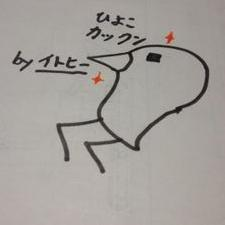

企画制作部
- 制作長 伊藤 拓（イトヒー） 
当団体のクリエイターのリーダーしてます。イトヒーこと、伊藤拓です。
自由かつ思いやる気持ちを持って日々作品作りに打ち込んでいます。様々なクリエイターがいるので、技術と知識がどんどん集まっています。ぜひ私らの作品をご覧ください
- 音楽班長 古澤知之

UGP音楽班長の古澤です！エレキベースのバンド経験だけで編集のことはド素人から入団しています。
先輩や後輩からたくさん学んでいます。教えてくれます。たくさん学び、チャレンジできる場です。
他にも…？！
・創作好きな人が集まっています
・作りたいものが企画出来ます
・いろんな技術を持ったメンバーが集まっています！
・制作、発信、宣伝までモノづくりの一連の流れを体験できます